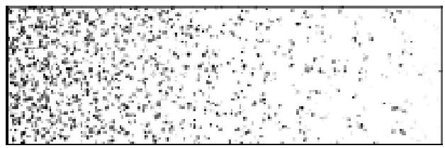

——亚历山大·伍尔科特
我们知道世界很大，但无法想象它到底有多大。女儿刚满8岁时我有时会和她玩游戏，希望她能感受到地球的广阔和数的大小。有一次她打了一个喷嚏，于是我让她猜猜此时此刻世界上有多少人刚打了喷嚏。她说200个，这对一个8岁的孩子来说已经不错了。我告诉她我猜有好几万人，考虑到目前世界人口已超过70亿，这个数字比实际人数要少好几位数，但女儿一听非常惊讶。今天，要回答某一刻全世界有多少人在读取条形码这一问题恐怕更难，我们在超市收款台不断会听到这一哔哔声。就以你读这句话的时间为例，猜猜这一时刻有多少条形码被扫描。我猜你肯定大大低估了这一数字。全世界一天扫描条形码的数量超过50亿。这意味着，在你读这句话时，有将近10万件商品被出售，这还不包括网络购物。这一数字可能有助于我们理解世界之大。但与更微观的分子层次相比，每秒钟被扫描的条形码数量却不足为道。
在这个原子和分子构成的物质世界，没有什么百分之百确定。因此我们必须从可能性而不是从确定性角度考虑问题。当然毫无疑问，我们确信明天地球会转动，太阳会升起，但人们往往用共同的人生经验来接受世界上绝大多数预期的现象。通过完美骰子数学理论能预测真实的投骰子行为。骰子为白色立方体，圆边，通常制作并不完美无缺，这些骰子上凹陷的黑点并不会干扰它的对称性旋转。生产商要对骰子上6个黑色凹点负责，这些凹点能使骰子旋转时偏向某个点。[100]赌场的骰子制作偏差要接受严格的监管。与普通棋盘游戏使用的骰子相比，赌场骰子的期望均值更接近3.5。
大数定律巧妙地将数学理论与物理现象结合起来。它可以用来解释宇宙中的许多奇事和自然界的混乱状态。它甚至认为宇宙间许多结果都只不过是掷骰子和扔硬币产生的连续反应结果。
我们很容易相信不同时空中同时发生的事件不是偶然，而是冥冥之中的命运安排。事情果真如此吗？以墨汁消散在水中为例。将一滴墨汁滴入一瓶水中，整瓶水的颜色会随之改变。是墨汁注定要均匀地消散在水中？还是水的颜色只是偶然发生了均匀的变化？假设墨汁的颜色是蓝色。首先你看到一滴蓝色的墨汁从滴管中滴落。如果这滴墨汁没有溅落在水面，你会看到一个蓝色小圆点下落，变成各种有趣的形状。它会变成一个圆环体，圆环体又会延展成一个方形圆环，其中各角为圆点。这些圆点又将分裂成4个圆环体，然后4个变成16个，如此重复，直到撞到瓶壁或底部而消散。物理学根据作用在球状体上的力量可以很好地预测这一过程。因此这滴蓝墨水的命运可以根据物理学（即着色的表面张力，介质之间的压力/浮力关系，向前的浮力矢量和分子的速度）和数学预测。但如果它们撞到瓶壁，情况就会发生变化。表面张力变小，分子键震动，对称被破坏，任意因素介入进来。这时两种液体在形成新形态过程中受到干扰，难以回到任何形式的对称状态。分子开始扩散，液体之间的结合力向四方胡乱延伸。
如果墨汁轻微溅落到水面会发生什么情况呢？你将会看到墨汁缓慢下落，分散成壮丽的形状，像微风中的卷云。数分钟内，根据水的深度，水将变成均匀的蓝色，墨汁在水中扩散，没有了形状。[101]墨水有可能会恢复到原来的形状，不过这种可能性极小，我们完全可以忽略不计。至今没有人报道看到过这一情况发生。这种巧合的概率非常小，概率小数点后零的位数比地球上沙粒的数量还多。但这并不一定意味着这种情况不可能发生。从理论模型上来说，该现象区分了时间方向。墨汁滴落发生在过去，而水变成均匀的蓝色发生在现在。
瓶中水由清澈变成蓝色，这其中到底发生了什么呢？从分子的层面来看，蓝色墨水的每一个分子不只是漫无目的地游荡在水分子中。分子之间存在结合力，但不管分子朝哪个方向运动，这一规则有序的运动表面上看来似乎杂乱无章。
如果分子之间的结合力比较松散情况会怎样呢？我们换一个实验来进行说明。以研磨很细的咖啡为例。从一长方形冷水缸左侧倒入少量咖啡粉。图9.1从微观层面展示了发生的现象。图中黑色小点为咖啡粉末从左至右的浓度。几秒钟过后将发生什么变化呢？咖啡浓度从左至右、从上至下逐渐变化，最后整个水缸中咖啡粉末分布均匀。

图9.1 咖啡粉末在长方形水缸中的扩散现象
你或许认为有一种力驱使咖啡粉末从浓度高的地方移向浓度低的地方。但事实上并不存在这样一种力。粉末对自己的去向没有偏好。咖啡粉末之间相互独立。它们受水分子的撞击四处胡乱移动。咖啡粉末的运动路径杂乱无章。为了更好地理解所发生的现象，可以在水缸中画一条虚线区分高密度区和低密度区，想想虚线上的粉末向右移动的可能性有多大。答案是粉末向左和向右移动的可能性均等。从左至右移动的咖啡粉末要多于从右至左的粉末，这只是因为虚线左边的粉末更多。因此最后粉末均匀地散落在水中的原因在于分子各方向移动的可能性均等。这也解释了高尔顿钉板实验现象（图5.3）。
热力学第二定律告诉我们，我们可以用气体做同样的游戏。取两个容器，一个注入一定气压，另一个空的。用一根空心管将两个容器连接起来，使气体能自由移动。容器中的气体会迅速扩散，直到两个容器的气压相等。气压均衡现象就是粒子四处分布这一普遍趋势的例子。这里还有一个惊喜：热水壶开水中的气体分子会像气球一样相互胡乱碰撞，随着时间的推移，你会发现每一个分子都会暂时回到最开始的位置。亨利·庞加莱用力学系统定理展示了这一现象。
如果在棋盘中央放大量的跳蚤会发生什么情况呢？很快跳蚤会四处跳动占满棋盘。正如冷水缸中的咖啡末，跳蚤只是毫无章法地四处乱跳。跳蚤跳开不是为了找到更大的空间，因为它即使跳到了更大的空间，它仍旧四处乱跳。它们只是胡乱瞎跳。如果继续跳，它们是否曾跳回到最初的位置？可能不会。但是，想想下面的假想实验。假设有两个桶。一个桶标为A，里面装有100个球，标号为1～100。另一个桶标为B，里面什么也不装。再假设有一桶筹码，编号为1～100。随意选上一个筹码读出上面的标号N。从A容器中找到标为N的球，将它放到B桶。放回筹码再重复这一过程。每次拿到筹码N，就将任一桶中标为N的球放到另外一个桶中。你能猜出结果会怎样吗？是的，桶A中球的数量成指数减少，直到两个桶中的球数量相当。但是随着A桶中球的数量减少，拿到与桶A中标号相同的筹码的可能性也随之减小。事实上，减小的比率与桶A中剩余的球数成正比。我再重复一次问题：你能猜出最终结果将怎样吗？结果似乎有违常理，令人惊讶，但毫无疑问，最终所有的球将回到桶A，不过这可能需要相当长的时间。庞加莱用力学系统定理作出了这个预测。[102]正如柏拉图和伯努利提到的，该定理提出了“万物复原说”，指出“随着时间的推移，万物最终将回到原点”。[103]已故的著名物理学家詹姆斯·琼斯爵士（因其在天文学和物理学普及方面作出的巨大贡献而被授予爵士称号）曾开玩笑地说，今天活着的人呼吸的都是尤利乌斯·凯撒（罗马共和国末期杰出的军事统帅、政治家）临死前的空气分子。
以上的例子解释得通是因为我们从大量事物出发。如果数目非常非常大，如一滴墨水中的分子数或地球上的人口数量，我们就更有机会将随机因素平均化，同时能清楚了解众人中个体的变化情况。
自然界的很多复杂现象或许都可以简单地解释为多次扔硬币或随机选择数字。从大量的随机数字中，偶然造就了一个不断发展的动态世界，蓝色的墨水毫无目的地扩散在水中，这些现象符合热力学定律，跳蚤胡乱瞎跳，散落在棋盘的四处，DNA毫无计划地多次出错复制，如此这般偶然地造就了独特的你我。
隐藏变量
隐藏变量带有欺骗性，让我们以为原因不在这，或者难以找到。部分原因在于世界太大，还包括连接各部分的无形作用。我们习惯局部思维，没有考虑组成大千世界（从亚原子粒子到各星系）中各事物之间的多种交互作用。
有时两个完全独立的变量通过第三个变量似乎有某种统计学上的联系。遇到这种情况，通过我们的数据分析方式或数据的显示方式，我们往往看到的是虚幻相关。如果我们准备简单地收集数学课上学生的考试分数和头发长度，我们很可能发现头发长度和分数之间呈正相关。头发长的学生很可能考试分数高。如果我们不考虑第三个变量，可能会得出如下结论：这个班上的学生考试要得高分就应该留长发。我们不能天真地忽视另外一个变量，如年龄和性别。头发偏长的学生或许年龄更大，刚好留着长发，或女生的头发通常比男生长。[104]另外一个例子是收入和大学成绩之间的相关性。我们或许会将之混为一谈，错误地认为一个人的收入由其在校成绩决定，这里的隐藏变量是学生愿意付出的辛苦工作量和时间。[105]
隐藏变量在统计数据相关性上非常常见。没有发现这些变量，我们必定会得出各种荒唐的结论，如“在大学要取得好成绩就应该抽烟”，因为“抽烟的大学生考试分数比不抽烟的学生高”。再如，最近在南太平洋的新赫布里底群岛上，大家认为虱子促进身体健康。数世纪以来，年长者无意中发现当地身体健康的人吃虱子，而身体不好的往往不吃虱子。他们得出结论认为虱子带来健康的身体。经过更仔细和有控制性的研究发现，岛上几乎每个人都吃过很多虱子。虱子也可能会引起发热，从而损害身体健康。这里容易混淆的是身体不好的村民恰好是发热和不吃虱子的人。“这个例子将因果关系混为一谈，曲解颠倒。”达雷尔·赫夫在60多岁写的畅销书《统计学会撒谎》中写道。[106]媒体经常对民意调查结果给出一些奇怪的解释：农场杀虫剂导致自闭症；电话线导致脑肿瘤；山葵茶导致肌肉松弛；有90%的医生认为早餐吃谷类食品有助于健康；胳膊长的孩子的推理能力比胳膊短的孩子强；每周松林散步一次会降低应激激素皮质醇、血压和心率；女性应该服用雌性激素以降低患心脏病概率；对患有心脏疾病的女性，雌性激素治疗将加大心脏病发病的概率。雌性激素治疗可能会使女性免患骨质疏松症和结肠直肠癌，但它也可能加大心脏疾病、中风、血栓、乳腺癌和痴呆等病症风险。[107]
以下是罗纳德·艾尔默·费希尔爵士的经典案例。对于很多生物科学家和统计学家来说，罗纳德·艾尔默·费希尔爵士是现代统计学和实验设计之父。他1890年出生于伦敦一个郊区，1962年在澳大利亚阿德莱德死于结肠癌。理查德·道金斯称费希尔是继达尔文之后最伟大的生物学家。
费希尔热情奔放，很受大家喜欢，他爱好广泛，勇于探索，热爱科学研究，乐观健谈，但对犯错、导致出错或散播错误的人偶尔会大发雷霆。他的字迹如同教学方法一样复杂难懂：“一般的学生上费希尔的课很吃力，他讲课很快，往往只有两三个学生能跟上他的节奏，继续认真听讲。”[108]
费希尔早期是一名统计人员，在农业试验站工作。这个地方后来以实验设计开发而闻名于世。费希尔提出了我们今天的方差分析，建立了随机化原则，增强了复制的重要性。[109]他运用定量方法设计实验检验巧合，将52张扑克牌搭配，系统研究超感知觉。[110]该方法很实用，要求根据整套扑克牌的正常排序来设置计分系统。
很难相信像费希尔这样的生物学天才也曾支持优生学。这种误导性看法在20世纪30年代之前非常流行。他们认为如果政府不鼓励拥有“理想的”基因特质的家庭多生孩子，而劝阻“劣等”基因特质家庭少生孩子，那么基因品种会使文明衰落。
1958年8月，费希尔在《自然》杂志上发文说：“有研究发现肺癌和抽烟习惯相关，这种关联令人费解。我们不会因此而轻易地认为，到达支气管的香烟燃烧物经过很长一段时间后将诱发癌症。例如，如果可以就此推断吸烟导致肺癌，基于同样的理由，我们也可以推断吸烟可以预防肺癌，因为肺癌患者比其他病患者吸烟更少。”[111]在《美国传染病学杂志》上，传染病学家保罗·施托利写道：[112]
费希尔的论述不完善。了解到他对犯错者的火爆脾气，我们可以想象，当看到别人犯了和他同样的错误，过早地下结论，没有仔细研究所有的数据，他会有多生气。他没有意识到他自身的矛盾：他也吸烟。
遗憾的是，很多健康研究结果得出的成因和防治结论在大众媒体报道下草草结束。我们应该多吃鱼，少吃反式脂肪，不要居住在电磁场附近。这些健康建议可能导致其他危害。我们曾被告知，为了减少患心脏疾病的概率，我们应摄入维生素E、维生素C和β-胡萝卜素作为抗氧化剂。为了防止结肠癌我们应该多吃纤维素。我们曾被建议少吃粗粮，然而数十年过后，又说要多吃粗粮。一些大规模观测研究无法证实这一理论。仅仅由于一个临床实验研究涉及数万的受试证实了一个假设，这并不意味着一个事件导致另一个事件。实验所能做的只是提供了假设成立的一种可能性。它最多只是提供了一个事件导致另一事件的间接证据。如果不确定原因，我们无法提供具体的建议。事实上，如果原因出错，建议带来的危害可能更大。[114]
这并不是说这些临床研究没有任何意义。它们留下了很多结果。例如，尽管我们不知道真正的原因，我们现在确切地知道吸烟和肺癌、心血管疾病有一定的因果关系。吸烟是原因之一。我们得出这一结论源于一次偶然发现——第二次世界大战时期女性肺癌患病率高涨。当时美国女性突然大量地进入劳动力市场，开始吸烟。通过对比研究日本和美国女性，以及与美国女性的乳腺癌患病率相同的两代日裔美国女性表明，美国人的饮食和生活习惯和乳腺癌有关。问题在于确定因果关系很难。我们通常会遇到令人困惑的情况。当A导致C，而间接引发B时，我们往往认为一事件是另一事件的起因。
临床试验的问题在于他们没有做到随机。从来没有人要我做临床试验的受试。我们肯定好奇：那些受试者是些什么人呢？他们是志愿者。许多人是有偿服务，由与资助人利益有关的机构支付费用。换句话说，这些受试者来自一群特殊的群体，不是随机取样。因此研究的结果是暂时性的，于是再等10年或20年，又会有新的研究来质疑前期的研究结果。临床研究偏见很难避免。参与临床试验的受试者可能更愿意相信研究提出来的建议，认为这对自己有益。他们可能更瘦，身体比较健康。我们可以从统计学角度调整社会经济地位带来的影响，但效果不一定很好。[115]
另一方面，如果民众听取来自临床试验的健康建议，我们要知道一些事情。我们断定吸烟是导致肺癌和心血管疾病的诱因。如果这一结论是错的，我们应该看不到肺癌和心血管疾病大幅度下降这一现象。过去50年美国吸烟人口下降了57%。
历史告诉我们，我们现在相信的事情可能100年前的人们并不以为然。除了我们看到的、测量的和我们以为自己知道的，还有更多的东西有待我们发现。塞缪尔·阿贝斯曼在他的著作《事实的半衰期》告诉我们：“我们不停地获得科学知识，结果在探索世界的过程中，事实每隔一定时间就被推翻。”[116]不管今天多么坚定的观念也不会一成不变。它们不过是操作性假设。宇宙中总有些许不可测性，我们的研究工具有限，因此我们不可能无所不知。
是的，我们有一定的局限性。自然界的事件依赖的变量太多，我们不可能一一测量。这就是忽略不确定原则。如果像扔硬币这样简单的事件就有无数个无法察觉的变量，想想导致像癌症一样复杂现象的变量吧。但是查找癌症的诱因和猜测嫌疑犯不同。有些科学家将第二次世界大战以来工业化国家肺癌患病率上升的原因归结于职业和新的工业产品。他们怀疑沥青，因为美国和欧洲都在大兴修路。然而，直到20世纪50年代末，许多研究将吸烟与癌症相关联，吸烟已明确为致癌的重要因素。统计学的任务不是找到原因，而是找到可疑因素。许多无法用规律解释或无法通过观测测量的自然关系可以通过统计方法找到相关性。
回到公元前5世纪，希波克拉底（古希腊医师，被称为“医学之父”）曾提到从树皮中提取的粉末可以缓解头疼和发热，这就是阿司匹林。自19世纪以来德国制药公司拜耳开始将它制成药片。但没人知道为什么1971年停止使用该药。当时英国药理学家约翰·罗伯特·文指出，阿司匹林能抑制某些分子化合物的生成，而这些化合物能调节肌肉组织的收缩和放松。自16世纪以来吗啡一直作为止痛药使用，但在2003年之前没人知道人的身体可以自发生成止痛物质。我们在弄清我们为什么做之前应该好好地思考这些事件。在没人知道细菌之前，吃饭前人们会洗手。现在我们洗得更频繁，外加抗菌肥皂，将有益的微生物也杀死了。我们要怎么才能知道有些细菌有益于我们的健康呢？
科学想弄清楚因果之间的直接关系，但这并没有要求我们弄清这种关系。科学家或许会怀疑两个复杂现象之间的相关性。真正的问题是人类倾向于在本不存在关联的事物之间建立联系，并且习惯忽视难以预测的复杂关系。我们认为巧合是命运的安排。这可能是对的，也可能不对。在错综复杂的现象中，有些联系通过很长的间接关联巧妙地连接，我们无法设想它们之间的影响。